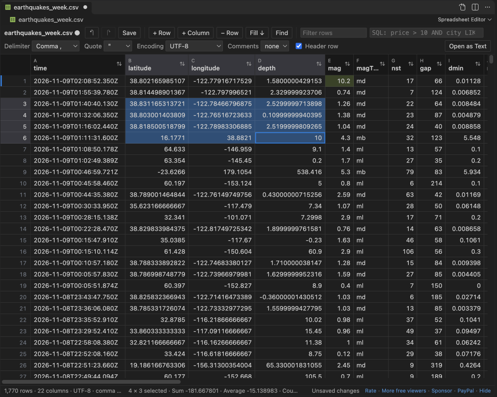

Open files in VS Code and Cursor / Tables and data
Edit CSV files in VS Code as a spreadsheet
VS Code opens a CSV file as plain text. To edit it as a grid, install the free Spreadsheet Editor by Zovo, open the file and click the table icon in the editor title. Type in a cell, press Enter, and save with Ctrl+S. Undo, save, revert and hot exit are VS Code's own, and rows you did not touch are saved byte for byte.
Free, MIT license. Extension ID zovo.zovo-spreadsheet-editor, version 0.1.0. Needs VS Code 1.90.0 or newer.
Also free from Zovo: XLSX, Excel, CSV & Parquet Viewer, VS Code Marketplace · Open VSX (Cursor, Windsurf).

Steps in VS Code
- Install Spreadsheet Editor from the Marketplace, or press Ctrl+P (Cmd+P on macOS) and run
ext install zovo.zovo-spreadsheet-editor. - Open a .csv, .tsv, .tab or .psv file and click the table icon in the editor title, or right-click the file and pick "Open in Spreadsheet Editor". .xlsx and .xlsm files open in it when you click them.
- Click a cell and type. Enter moves down and Tab moves right. Right-click a row number or a column header to insert, delete or move rows and columns.
- Press Ctrl+F (Cmd+F on macOS) for find and replace with match case, regex and whole cell. Type a condition such as
price > 10 AND city LIKE 'Par%'in the SQL box to filter rows. - Press Ctrl+S to save. To open CSV files in the grid every time, run "Spreadsheet Editor: Make Spreadsheet Editor the Default for CSV and TSV".
Steps in Cursor, Windsurf or VSCodium
- Open the Extensions view with Ctrl+Shift+X (Cmd+Shift+X on macOS).
- Search for
zovo.zovo-spreadsheet-editorand click Install. Cursor, Windsurf and VSCodium install from Open VSX, where it is published aszovo/zovo-spreadsheet-editor. - If your editor has no gallery, download the .vsix from the Open VSX page and run "Extensions: Install from VSIX...".
- Then use it the same way as in VS Code.
What Spreadsheet Editor handles
- A 1,000,000-row CSV opens in about 2 seconds and saves in about 1.3 seconds. A 200 MB file with 5.6 million rows opens in under 3 seconds.
- Rows you did not touch keep their delimiter, quotes, encoding, byte order mark and line endings.
- Any one-character delimiter, a quote character, comment lines, and 13 encodings including UTF-16, Windows-1252 and Shift_JIS.
- Excel .xlsx: change values and rows, and styles, number formats, merged cells, formulas and the other sheets stay.
- A file changed on disk while you edit is never overwritten without asking.
What it does not do
- Pivot tables, charts, shapes, slicers and macros are not kept when an Excel file is saved. Before the first save of such a workbook, a note lists them and offers Save a Copy.
- Macro workbooks (.xlsm) are never written in place. Edits go to a new .xlsx copy.
- CSV files over 512 MB open read-only, and workbooks over 40 MB do not open for editing (both are settings).
- Sorting and filtering change the view only, not the order of rows in the file.
In JetBrains IDEs (IntelliJ IDEA, PyCharm, WebStorm, CLion and others)
- CSV Editor. Zovo has no JetBrains plugin for CSV editing. This one has 13,838,961 downloads. Its listing says: "Edit CSV, TSV, and PSV files as text or as a table".
- ExcelEditor. 316,361 downloads, for Excel files.
Other options
- Edit CSV (
janisdd.vscode-edit-csv, 2.5 million installs, on Open VSX). Its own description: "extension to edit csv files with a table ui". The most installed CSV table editor. - Rainbow CSV (
mechatroner.rainbow-csv, 25 million installs, on Open VSX). Its own description: "Highlight CSV and TSV files, Run SQL-like queries". It colors the columns in the text editor, so you edit the text itself. - Spreadsheet Viewer (
GrapeCity.gc-excelviewer, 6.8 million installs, on Open VSX). Its own description: "Edit XLSX spreadsheets and CSV files in Visual Studio Code and VS Code for the Web."
Install counts and Open VSX status were checked on 9 November 2026. Descriptions in quotes are the extensions' own.
Questions
Can I edit a CSV file in VS Code without an extension?
Yes, as text. VS Code shows the commas and quotes, and you edit them by hand. A grid editor keeps the columns in line for you.
Will saving change rows I did not edit?
No. Untouched rows are copied byte for byte. A test edits one cell in a 1,000,000-row file and checks that every other byte is the same.
Does it work in Cursor?
Yes. Cursor, Windsurf and VSCodium install it from Open VSX as zovo/zovo-spreadsheet-editor.
More about Spreadsheet Editor
Read the Spreadsheet Editor page for every feature and setting, or the source code on GitHub.
Related guides
- XLSX, Excel, CSV & Parquet Viewer on the VS Code Marketplace (also on Open VSX). Opens xlsx, xls, csv and parquet files as a sortable table with SQL filters.
- Open an Excel .xlsx file in VS Code
- Open an Excel file in Cursor
- See a CSV file as a table in VS Code
- Open a Parquet file in VS Code
Zovo Pro and support
Zovo Pro: USD 19 once, every Zovo viewer. It turns on the Pro tools in this extension and in the other Zovo extensions you use. The free features stay free.
After a card payment your license key shows on the next page. Paste it with the command "Zovo Pro: Enter a key".
You can also support the work with no Pro:
Need your format supported?
Open a format request with a sample file, and I reply there whether it can be done. For USD 299 once, through this GitHub Sponsors tier, I add your file format or a missing feature to this extension, with tests, within 7 days.